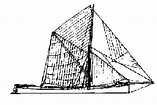
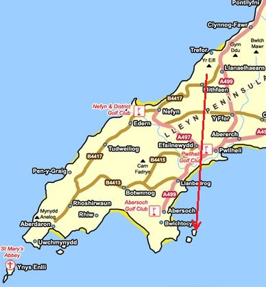
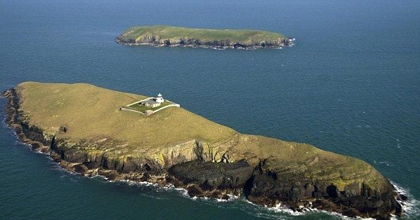

Les îles de Tudwal
 Les îles St Tudwal depuis l’Eifl
Les îles St Tudwal depuis l’Eifl
Regardez à droite, vers la mer, vous verrez les îles de Tudwal – un groupe de deux îles au sud d'Abersoch connu sous le nom de Ynys Tudwal Fawr (à l'ouest) et Ynys Tudwal Fach (à l'est). Ynys Tudwal Fawr a été achetée par l'aventurier Bear Grylls en 2009. Le phare, construit en 1877, est situé sur cette île. Depuis 1935 il n'y a pas de gardien. Ynys Tudwal Fach appartenait à l'auteur Romana Barrack (Carla Lane) jusqu'à sa mort en 2016. Elle avait acheté l'île en 1991 pour protéger la faune.
Le navire Ann - Flat Huw PuwTudwal était un religieux gallois du sixième siècle qui émigra en Bretagne et y fut consacré évêque. À l'époque de Tudwal, les religieux se déplaçaient par mer d'île en île et de péninsule en péninsule.
Les îles Tudwal de l’Eifl.Henry Bailey Maria Hughes a grandi à Rhoscolyn où on se souvient de lui comme d'un garçon sérieux et pieux. Hughes était polyglotte et il a été interprète pour le concile du Vatican. Il a parcouru l'Afrique, le Portugal, le Canada et l'Amérique pour faire connaître la foi catholique avant de s'installer sur les îles de Tudwal. Il était le dernier habitant de l'île à poursuivre l'œuvre que saint Tudwal avait commencée mille ans auparavant. Il a fait venir beaucoup de gens pour l'aider, mais toutes ses tentatives ont échoué. Son monastère sur l'île est détruit pendant la nuit de la Toussaint en 1887.
Photographie aérienne des îles St TudwalEn temps de tempête c'est un lieu dangereux, et c'est ici que la barque de Huw Puw a fait naufrage. Huw Puw était originaire de Liverpool et était capitaine et copropriétaire d'une barque construit à Frodsham en 1799. Il était une barque à fond plat faite pour naviguer les eaux peu profondes. La plupart du temps, Huw Puw travaillait entre Caernarfon, Felinheli Liverpool et Runcorn transportant du charbon, du bois et des ardoises. C'était un bateau de 60 tonnes avec un mât et 3 membres d'équipage. Il naviguait avec une cargaison du bois de Porthaethwy à Bermo lorsqu'une tempête éclata le 18 octobre 1858. La barque a coulé mais l'équipage a été sauvé. Selon l'histoire, la femme de Huw Puw était à bord - on croyait à l'époque que le présence des femmes à bord des bateaux portait malheur. Les histoires amusantes abondent autour de Huw Puw. C'était un personnage plein d'esprit qui aimait conter des histoires et siroter quelques pintes ! Huw Puw est mort en 1865 à l'âge de 70 ans et fut enterré au cimetière de Llanidan.